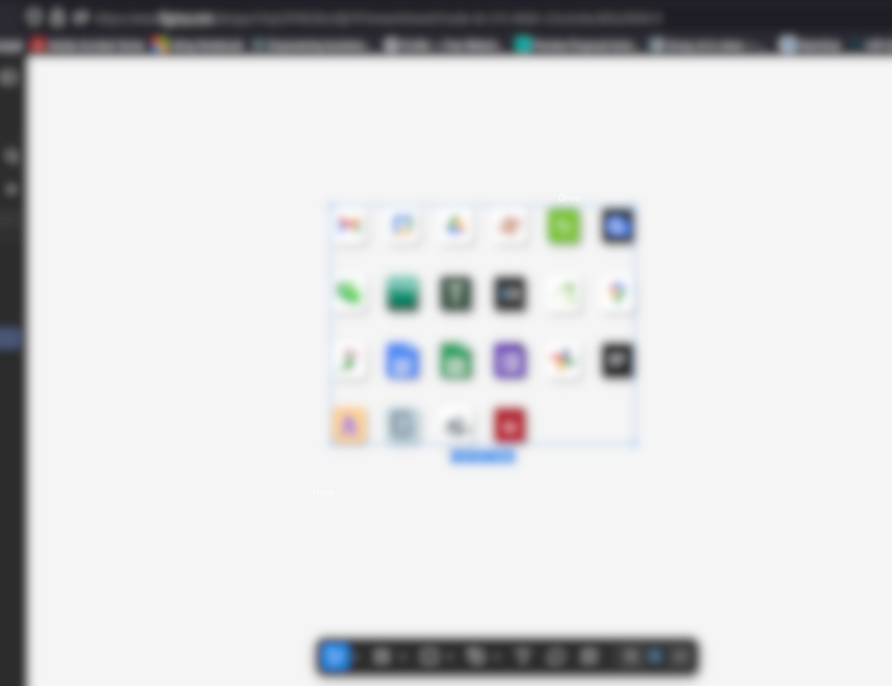

Redesigning IBW’s Intranet with Google Sites
Overview
At IBW Surveyors, I led the complete redesign of the company’s internal intranet, transforming it from a static, cluttered information hub into a modern, user-centered platform that enhanced communication, resource access, and team productivity. Using Google Sites as the foundation, I introduced embedded custom HTML, CSS, and JavaScript to go beyond native capabilities, enabling responsive layouts, interactive UI components, and improved navigation flows. The redesign was guided by wireframes and high-fidelity prototypes built in Figma and Canva, which were presented to department leads for iterative feedback and approval.
Problem
Prior to this project, the company's internal intranet — built using Google Sites — had become cluttered, outdated, and difficult to navigate. Content was fragmented, important documents were buried or duplicated, and users across departments struggled to locate the tools and resources they needed to perform their work efficiently. The lack of a clear information hierarchy and limited design flexibility in the original setup contributed to frequent internal support requests and delays in communication. As the organization grew, so did the need for a more structured, intuitive, and scalable internal platform.
Process
- Design: Created mockups and collected feedback
- Development: Used embedded code in Google Sites for advanced styling and interactivity
- Testing: Checked for performance and mobile responsiveness
- Launch: Rolled out intranet with training and internal messaging
Outcome
- 30% reduction in internal support requests
- Increased visibility and usage of internal tools
- Positive feedback from multiple departments
Tools & Skills
Figma, Canva, HTML, CSS, JavaScript, Google Sites, UX Design
Design Changes
App Dashboard Redesign
Idea
Replace low-quality, pixelated image buttons with a clean, scalable design using modern UI principles.
Discussion
The original dashboard used inconsistent images that made navigation unclear and visually unprofessional. Icons were pixelated, lacked uniform sizing, and had no accessibility features like alt tags.
Solution
Implemented a responsive grid layout using high-resolution icons with
consistent spacing and modern hover effects. Added descriptive alt
tags for screen readers and improved overall accessibility and visual flow.
- Enhanced visual clarity and consistency
- Faster user recognition of app functions
- Accessible for screen readers
- Easier to maintain and scale
| Before | After |
|---|---|

|

Click to View |

|
Click to View |

|
Click to View |